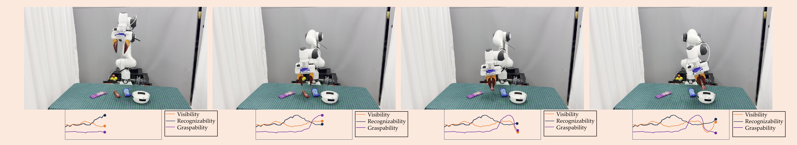
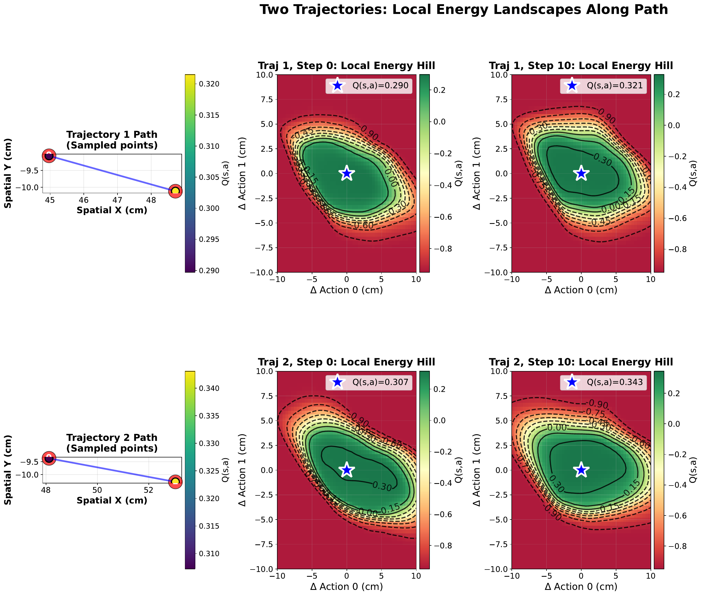
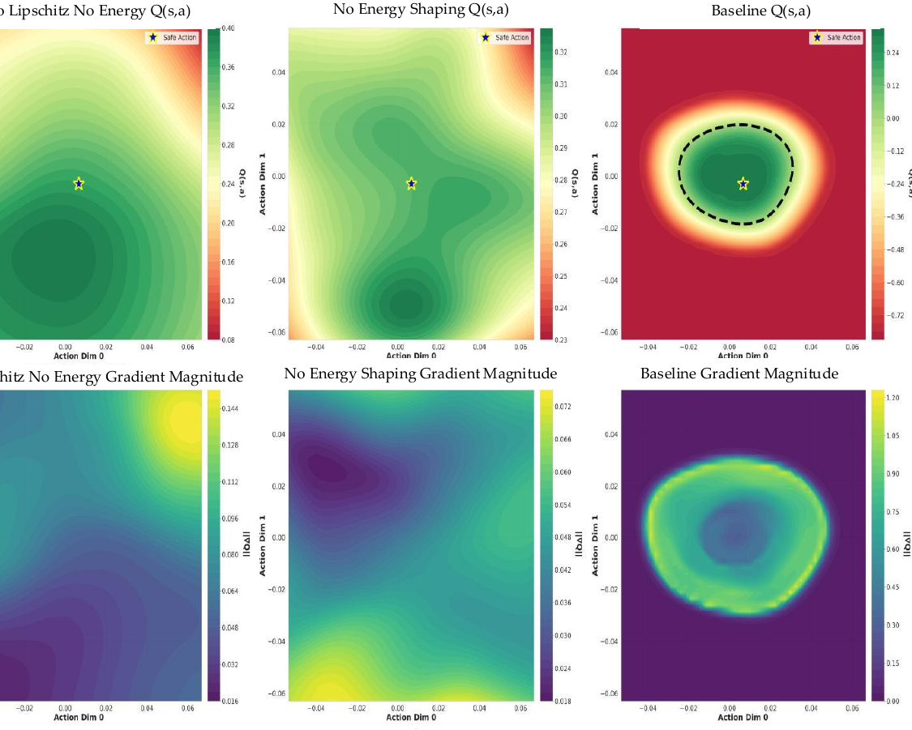
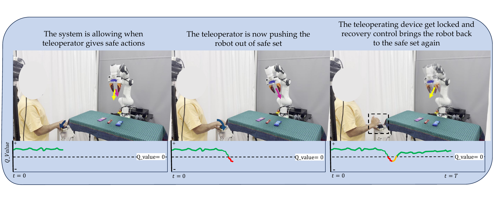
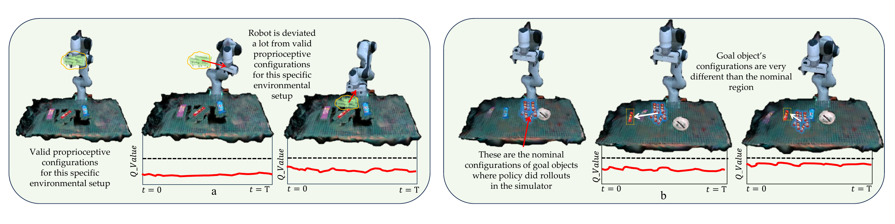

Abstract
Modern visuomotor policies — flow-matching, diffusion, ACT — are remarkably capable on the trajectories they were trained on and remarkably brittle outside of them. Field deployment requires more than higher accuracy: it requires the policy to recognize when it has wandered to a state from which the demonstrations no longer apply, and to do something sensible about it.
TAIL-Safe attaches a task-agnostic safety filter to any deterministic imitation-learning policy. We train a Lipschitz-continuous, reach-avoid Q-value function whose zero-superlevel set is an empirical control-invariant set — the region of state-action space from which the underlying policy reliably succeeds. The function is learned from rollouts inside a Gaussian-Splatting reconstruction of the workspace, scored along three short-horizon criteria — visibility, recognizability, and graspability — that are agnostic to the manipulation task. At run time, when the nominal policy action would leave the safe set, a Nagumo-inspired controller performs bounded gradient ascent on Q until the system re-enters it. On a Franka Emika robot, base flow-matching policies that fail under modest perturbations finish their tasks consistently when guided by TAIL-Safe, and detected unsafe states are caught roughly twenty milliseconds before failure on average.
Method
A safety monitor is only useful if it can be trained without endangering the real robot, and if it generalises beyond the specific task it observed. TAIL-Safe addresses both points by separating the learning problem from the task it ultimately protects.
A photo-real digital twin as a free safety simulator. A short five-minute capture of the workspace is reconstructed into a Gaussian-Splatting scene; segmented object Gaussians are then rigidly pose-updated from a wrist-mounted RGB-D stream at ten hertz. The twin gives us a renderable, physics-faithful environment in which we can perturb the policy and harvest unsafe trajectories that we would never deliberately execute on a real arm.
Three task-agnostic criteria, instead of a hand-crafted reward. At every step we score the state along three lightweight signals that remain meaningful across manipulation tasks: visibility (does the target lie in the wrist camera's field of view?), recognizability (does the rendered object embedding match the reference DINOv2 prototype, in Mahalanobis distance?), and graspability (do antipodal grasp candidates exist near the predicted end-effector pose?). A small fusion network — WeightNet — learns when each criterion matters: visibility dominates during approach, graspability near contact, and so on.
A Lipschitz reach-avoid Q-function. We then train a single state-action value function on rollouts collected in the twin, using a reach-avoid Bellman operator and an energy-shaping loss that prevents the value landscape from flattening. Spectral-norm regularisation gives the network a Lipschitz constant that is small enough to support a closed-form recovery step, but large enough to sharply separate safe from unsafe regions.
Recovery as gradient ascent on the safety landscape. When the nominal action would push the system across the zero level-set of Q, we replace it with a bounded gradient-ascent step on the same function — a discrete Nagumo-tangentiality update — and continue executing the policy from the corrected state. The loop runs at 350 Hz on a single GPU and converges in fewer than three iterations on average.



Experiments
We evaluate TAIL-Safe on two physical manipulation tasks — Candy Pick and Pick-and-Place — and on a controlled set of perturbed rollouts inside the Gaussian-Splatting twin. We protect a base flow-matching policy and ask three questions: does the safety filter predict failure before it happens, does the recovery controller restore task progress, and does the protected policy complete tasks it would otherwise abandon?
On 270 held-out rollouts in the twin, the trajectory-level AUROC of Q reaches 0.993, with a per-state AUROC of 0.962. WeightNet separates safe and unsafe trajectories with effect size Cohen's d = 0.93, against 0.29 for an instantaneous heuristic. Crucially, the empirically measured Lipschitz constant of the trained network is 2.31, comfortably below the theoretical bound of 2.5 enforced during training, which is what makes the closed-form recovery step well-posed.
We perturb the robot online either by physically pushing the end-effector or by injecting SpaceMouse commands. Without the filter, the base flow-matching policy fails on every interrupted episode. With TAIL-Safe attached, the policy completes the task on every recoverable episode in our study, with an average of 2.3 recovery iterations per intervention and no observable degradation in nominal task time.
We deliberately drive the policy into severe OOD configurations on the real arm: camera occlusion, large object displacement, scene additions not present in any demonstration. In every such configuration the predicted Q-value crosses zero before the policy would have completed an unsafe action, and the recovery controller is triggered.
| Method | Traj. AUROC | State AUROC | Recovery % | Detect. latency |
|---|---|---|---|---|
| Equal-weight criteria | 0.437 | 0.514 | — | — |
| WeightNet only (no recovery) | 0.971 | 0.928 | — | — |
| Q-function, no energy shaping | 0.984 | 0.943 | 20% | 15 ms |
| TAIL-Safe (full) | 0.993 | 0.962 | 100% | 23 ms |


Videos
A short overview is followed by real-robot recovery from human and teleoperated interruption, two extreme out-of-distribution scenes, and a small set of rollouts collected entirely inside the Gaussian-Splatting twin that are used to train the safety predictor.
A compiled walkthrough of the pipeline — from digital-twin construction to closed-loop recovery on the real Franka.
The base policy is interrupted mid-task. The safety filter detects the unsafe state, the recovery controller steers the end-effector back into the safe set, and the policy resumes without an explicit reset.
Configurations far outside the demonstration distribution. The base policy diverges; TAIL-Safe flags the unsafe state in real time.
Successful and intentionally failed rollouts collected inside the photo-real twin, used to train WeightNet and the reach-avoid Q-function. No physical robot is required for this stage.
Citation